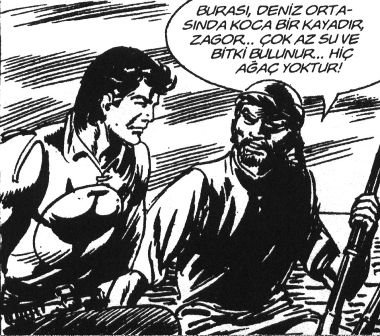

Keyifsizce eve geldi. Kömürlüğe gidip beyaz Şahin’e bakmak bile istemedi. Kapıyı “tık tıtık tıtık tık tık tık” şeklinde bile çalmadı.
Zile bastı, badem gözler göründü.
Hafifçe sarıldılar.
İçeri girdi.
– Merhaba.
– Merhaba.
Sessizlik...
– Kahveye gitmiyor musun Baba!
– Hayır, canım istemiyor.
Yemekte uzun bir sessizlikten sonra ilk o konuştu.
– Bugün tayinim çıktı.
– Nereye?
– APK Dairesi’ne.
– O ne demek?
– Araştırma Planlama Koordinasyon Dairesi.
– Eee, ne yapacaksın orada?
– Kurumun araştırmalarını, planlamalarını ve koordinasyonunu yapacağım.
– Maaşta değişiklik var mı?
– Yok.
– Bak Hıdır, 860 lira maaşla çok zorlanıyoruz.
– Dur bakalım, burası çok önemli bir yer. Tayin ettiklerine göre ardından şeflik geliyor olabilir.
– Yıllardır bunu söylüyorsun bir gelişme yok.
– Bu sefer umutluyum.
– Niye halanın oğlunu aramıyorsun ki? Seyfi bir telefonla seni daire başkanı bile yapar.
– Torpille o göreve geleceksem hiç gelmeyeyim.
– Bak, böyle diye diye, yerinde sayıp duruyorsun. Yıllardır aynı arabaya biniyoruz. Bir evimiz yok. Arabayı satsak, şu “morgıç”la bir eve girsek.
– Onun adı “morgıç” değil “Mortgage”. İngilizce “ipotek” demek. Bizim yabancı hayranı cahil gazeteciler “ipotek” demek yerine “mortgage” dediler. Ben ipoteğe girmem.
– İngilizceyi o kadar biliyorsan KPDS’den 70 al da, dil tazminatı al bari.
– Şenay Teyzem aradı mı?
– Hayır, niye?
– Yok bir şey.
...
– Ya senin ceketinin ve gömleğinin sağ kolu dirseğine kadar niye ıslaktı bugün geldiğinde?
– Yok bir şey.
– Biraz da kokuyor gibiydi?
– Yok bir şey...
Julian sözünü tutarak sonraki akşam bana geldi. Saat yedi sularında, ön kapının hızlıca dört kez vurulduğunu duydum, Cape Cod tarzı evimizin, eşimin onu Architectural Digest dergisinden çıkmış gibi gösterdiğine inandığı, çirkin pembe panjurları var. Julian önceki güne göre oldukça farklı görünüyordu. Hâlâ sağlık saçıyor ve harikulade bir dinginlik hissi veriyor; sade giysileri biraz tuhaf geldi bana.[4]
